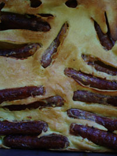
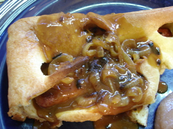

Toad in the hole
While my fellow food bloggers are busy celebrating spring by preparing asparagus, lovely springtime pasta salads, and other spring greens, I am marching to the beat of a different drummer by thinking about English nursery food.
We still have a nip in the air here in Pittsburgh, our farmer’s markets aren’t open yet, and I had a package of plump, pork country sausages made by the butcher shop of my favorite food purveyor sitting in the freezer that I wanted to use before summer begins. When Leland cooked his scallop soufflé last week I found myself fixating on toad in the hole, and thinking how much it has in common with what Leland made—an eggy batter mixed with protein and baked in the oven until it puffs up.
I am a long-time reader of English literature, and have always been attracted to descriptions of certain of their foods, particularly what you might call nursery food—shortbread, biscuits, bread and butter or toast cut into “soldiers”, puddings of all kinds, pies with custard (why don’t we serve it like that in this country?). I also like the idea of the full English breakfast with fried bread and grilled tomatoes and mushrooms. On the other hand, they can keep their suet and their Marmite.
The first time I read The Lion, the Witch, and the Wardrobe, by C.S. Lewis was as an adult, out loud, to Leland and his brother Jon, in the car on a trip to the Adirondacks. I will never forget the passage where the Pevensie children are welcomed by Mr. and Mrs. Beaver and given a meal in their home and the vivid description of all the food they ate for tea. I remember my husband and I looking at each other and salivating, and I can just imagine the impact the book had on a generation of war and ration book-deprived London children. Later on in the book Edmond is seduced by the White Witch when she offers him sweets which he can’t resist, a plot development which must have made complete sense to kids who hadn’t had sugar for as long as they could remember.
A series of adult books I’ve read recently begins with one called Not All Tarts Are Apple, by Pip Granger. The first two are told from the point of view of a plucky 7-year old in post-war London who has been adopted by a couple who run a cafe. She is obsessed with food as most children in those days must have been and there are lots of great food scenes in the books. They’re funny, too.
Anyway, back to the toad in the hole. I got the recipe from Delia online, which is written by a well-known British cook named Delia Smith. She’s got a no-nonsense, brusque way about her, in the manner of Margaret Thatcher. The Brits seem to respond to this type of treatment, and all I can say about that is that it’s good Hitler wasn’t a woman wearing a nanny uniform or the English probably wouldn’t have had the will to resist and we might all be marching in goose-step formation today.

This being written by an Englishwoman and all, there were a few puzzling moments for me, like when she asked me to cook one thing on a baking tray and another thing on a baking tin. Then there was the “dessertspoonful” measurement that threw me; I had to call an English friend to ask what that meant. I’m glad I did, because I thought it must mean something small, like a demitasse spoon, when in fact it’s quite big, about two tablespoons.
I increased the proportions of the batter a bit, since I was serving 3 of us as a main course. The onion gravy I made with half vegetable stock and half chicken stock, and half the Worchestershire sauce the recipe called for. I put the finished dish on the table with a bit of trepidation; after all, my husband is Jewish and my son is a teenager. I was a little afraid of getting the reaction from my husband that my mother got when she served him scrapple for the first time (prompting his rewriting the old Christmas carol to “Walking in a Presbyterian Wonderland”).

But I needn’t have worried; they both loved it! In fact I barely got to eat any myself and the platter was licked clean. My hat’s off to Miss Smith with the gravy as well, and she’s right, it would be terrific with mashed potatoes should you ever find yourself with any and no sauce for them.
Comments
Hey, it looks great! Brings back memories!! I enjoyed your writing, too. I wonder what I could use as a toad for a vegetarian version? Somehow I don’t think it would be worth the try… Let me know what other English things you cook up.
Great post and great dinner. It looks completely satsifying and perfect for a cold night. I’ll bet your family
loved it. I know my husband would.
I enjoyed the British-ness of the recipe, especially the instruction to bake until the “centre” was no longer “squidgy.”
Caroline—While I don’t think Toad in the Hole would be much good without the toad, Delia Smith had a nice collection of vegetarian recipes on her website you might want to check out. A lot of you Brits seem to be vegetarians, so I guess she caters to that.
The one negative about her website is that she’s trying to sell her recipe collections, but she makes a selection available for free, I guess to whet our appetites.
I am a toad-fancier myself. We must be related somehow. Check it out: www.lindystoast.com/2005/06/toad.html
What a great post, Lindy, and your toad looks beautiful! I’m thinking a “nob” may correspond to a “dessertspoonful”, what do you think?
The only thing I question in Jamie Oliver’s recipe is the balsamic vinegar in the onion gravy; it may be delicious but it seems too trendy in such an old-fashioned dish. I think Delia Smith’s mustard powder and Worchestershire sauce is probably much more authentic. You know, when she said this gravy was good with mashed potato, it didn’t even occur to me that she may have meant along with the toad, but maybe she did, reading Jamie Oliver’s recommendations!
You’re right about the gravy, I think. his toad was a bit avant-garde too, so I ditched the recommended rosemary. Somethings gussy up better than others.
Anythow, I love mustard and Worcestershire sauce.
I just learned from the wikipedia that a poorly made Toad in the Hole is referred to as “Frog in a Bog.”
fantastic toad recipe. thank you delia.
fantastic recipe from delia. my mouth is watering!!
Thanks, Helen, and welcome to the blog! This is a great recipe, and a real man=pleaser as well.
Yes Delia’s recipes are pretty good but please could you give up on the British generalisations??? Far from falling in line with Delia’s brusque manner, most of the country found her so annoying that her TV series came to a quick halt.
Sorry! Most of them come from a lifetime of Brit murder mystery reading, admittedly not good source of accurate cultural reporting.
Sorry but ‘a brit’ is completely wrong. Delia is a national institution in England, she has been around since the late sixties/early seventies and had many series and books. Her most recent show was aired here in December 09 and she has another series in the pipeline.
She is a tried and trusted cook and not a Trendy Wendy ‘chef’.
Her books would be found in most British homes, keep your shouty, swearing ‘chefs’ and give me Delia anytime. A true English lady and fabulous cook.
Can I add there is no need to apologise Rebecca generalise as much as you want. I’ll let you into a secret….a lot of the generalisations are true and we love them and are proud of them. The only thing I would say is that ‘British’ is not the same as English, Scottish, Irish or Welsh. The people in these countries have a great rivalry and often hatred towards each other.
English and proud.
Add a comment